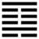

Sơn Thủy Mông (蒙 méng)
Quẻ số 3 là Truân, lúc vạn vật mới sinh. Lúc đó vạn vật còn non yếu, mù mờ, cho nên quẻ 4 này là Mông. Mông có hai nghĩa: non yếu và mù mờ
Thoán từ :
蒙: 亨, 匪我 求 童 蒙, 童 蒙 求 我 ．
初 筮 告, 再 三 瀆, 瀆 則 不 告 ．利 貞 ．
Mông: Hanh, Phỉ ngã cầu đồng mông, đồng mông cầu ngã.
Sơ phệ cáo, tái tam độc, độc tắc bất cáo. Lợi trinh.
Dịch: trẻ thơ được hanh thông. Không phải ta tìm trẻ thơ mà trẻ thơ tìm ta. Hỏi (bói) một lần thì bảo cho, hỏi hai ba lần thì là nhàm, nhàm thì không bảo. Hợp với đạo chính thì lợi (thành công).
Giảng: Theo nghĩa của quẻ thì cấn là ngưng, Khảm là hiểm. Ở trong (nội quái) thì hiểm, mà ở ngoài (ngoại quái) thì ngưng, không tiến được, tỏ ra ý mù mờ, cho nên gọi là Mông.
Xét theo hình tượng thì ở trên có núi (Cấn), dưới chân núi có nước sâu (khảm), cũng có nghĩa tối tăm (Mông). Cũng có thể giảng là dưới chân núi có suối nước trong, tức như hạng người còn nhỏ (khi thành sông mới là lớn), hạng “đồng mông”, cho nên gọi quẻ này là Mông (mông có nghĩa là non yếu).
Đặc biệt quẻ này chỉ chú trọng vào hào 2 và hào 5. Hào 2 là dương cương, đắc trung làm chủ nội quái, đáng là một vị thầy cương nghị, khải mông (tức mở mang cái tối tăm) cho trẻ. Hào đó ứng với hào 5 âm nhu thuận mà cùng đắc trung, là tượng học trò ngoan. Vậy là thầy trò tương đắc, sự học hành tất có kết quả tốt, cho nên quẻ này có đức hanh thông.
Tư cách của thầy cương, của trò nhu, cho nên thầy không phải cầu trò, mà trò phải cầu thầy. Và khi dạy, trò hỏi một lần thì bảo, nếu hỏi 2, 3 lần thì là nhàm, không bảo. Giữ được đạo chính (hoặc bồi dưỡng chính nghĩa) thì lợi thành công.
Ý nghĩa các hào : :
1. 初 六: 發 蒙, 利 用 刑 人, 用 說 桎 梏, 以 往 吝．
Sơ lục: phát mông, lợi dụng hình nhân, Dụng thoát chất cốc, dĩ vãng lận.
Dịch: Hào 1, âm: mở mang cái tối tăm (cho hạng người hôn ám) thì nên dùng hình phạt cốt cho họ thoát khỏi gông cùm, nhưng đừng đi quá mức sẽ hối tiếc.
Giảng: Hào âm này vị ở thấp nhất trong quẻ Mông là tượng kẻ hôn ám nhất, phải dùng hình phạt trừng trị mới cởi cái gông cùm (vĩ vật dục) cho họ được; khi có kết quả rồi thì thôi, đừng quá dùng hình phạt mà sẽ ân hận.
Chữ : "dụng hình nhân", dịch sát là dùng người coi về hình, tức dùng hình phạt.
2. 九 二 ． 包 蒙 吉 ． 納 婦 吉 ． 子 克 家 ．
Cửu nhị: Bao mông cát, nạp phụ cát, tử khắc gia.
Dịch: Hào, dương: Bao dung kẻ mờ tối, dung nạp hạng người nhu ám như đàn bà, tốt; (ở ngôi dưới mà gánh vác việc trên) như người con cai quản được việc nhà.
Giảng: Hào 2 dương, cương cường, nhưng đắc trung cho nên bảo là có đức bao dung; nó làm chủ nội quái, thống trị cả bốn hào âm, cho nên bảo nó dung nạp được các hào âm, tức hạng người nhu ám như đàn bà, nó ở dưới thấp mà lại là hào quan trọng nhất trong quẻ, nên ví nó như người con cai quản được việc nhà. Tóm lại hào này tốt.
Phan Bội Châu giảng ba chữ “tử khắc gia”cách khác: Cụ cho hào 5 ở địa vị tôn trong quẻ trên (ngoại quái) tức như cha trong nhà, hào 2 ở dưới, tức như con. Cha nhu nhược (vì là âm), con cương cường sáng suốt (vì là dương), cảm hóa được cha mà cha hết hôn ám, như vậy là con chỉnh lý được việc nhà.
Cao Hanh chỉ đứng về phương diện bói, mà không đứng về phương diện đạo lý, không cho Kinh Dịch có ý nghĩa triết lý, xử thế, cho nên hiểu khác hẳn: giảng “nạp phụ” là cưới vợ cho con “tử khắc gia” là con thành gia thất, đó là cái việc tốt của người làm bếp mắt không có đồng tử (bao mông, theo ông là : bào mông, bào là người làm bếp, mông là mắt không có đồng tử). Đại khái cách hiểu của Cao Hanh như vậy, xin đơn cử làm thí dụ.
3. 六 三: 勿 用 取 女 見 金 夫 ．
不 有 躬, 无 攸 利．
Lục tam: Vật dụng thủ nữ kiến kim phu.
Bất hữu cung, vô du lợi.
Dịch: hào 3, âm: đừng dùng hạng con gái thấy ai có vàng bạc là (theo ngay) không biết thân mình nữa; chẳng có lợi gì cả.
Giảng: Hào 3 là âm nhu (ở trong quẻ Mông, là hôn ám) bất trung, bất chính, cho nên ví với người con gái không có nết, bất trinh, ham của. Mà hạng tiểu nhân thấy lợi quên nghĩa cũng vậy (âm còn có nghĩa là tiểu nhân). Phan Bội Châu cho hào này xấu nhất; hạng người nói trong hào không đáng dùng, không đáng giáo hóa nữa.
4. 六 四 : 困, 蒙, 吝 ．
Lục tứ: Khốn, mông, lận.
Dịch: Hào 4, âm: Bị khốn trong vòng hôn ám, hối tiếc.
Giảng: Quẻ Mông chỉ có hào 2 và 6 là dương cương, có thể cởi mở sự hôn ám được, còn hào 4 kia đều là âm hết. Hào 4 này cũng hôn ám như hào 3, nhưng còn tệ hơn hào 3 vì ở xa hào 2 dương (hào 3 còn được ở gần hào 2 dương ), mà chung quanh đều là âm hết (hào 3 và hào 5), như bị nhốt trong vòng hôn ám, tất bị khốn sẽ phải hối tiếc, xấu hổ.
Tiểu tượng truyện Giảng: nó phải hối tiếc, xấu hổ vì chỉ một mình nó trong số bốn hào âm là ở xa các hào “thực” tức các hào dương. Hào dương là nét liền, không khuyết ở giữa, nên gọi là “thực” (đặc, đầy) hào âm là vạch đứt, khuyết ở giữa nên gọi là “hư” ; “thực” tượng trưng người có lương tâm “hư” tượng người không có lương tâm.
5. 六 五: 童 蒙 吉 ．
Lục ngũ: Đồng mông cát.
Dịch: Hào 5, âm: Bé con, chưa biết gì (nhưng dễ dạy), tốt.
Giảng: hào 5 này là hào âm tốt nhất như chúng tôi đã nói khi giảng Thóan từ của Văn Vương, vì nó có đức nhu (âm) trung (ở giữa ngọai quái), lại ứng với hào 2 cương ở dưới, có thể ví nó với đứa trẻ dễ dạy, biết nghe lời thầy (hào 2).
Phan Bội Châu coi hào này như ông vua (vì ở ngôi cao quí nhất trong quẻ) biết tín nhiệm hiền thần (hào 2).
6. 上 九: 擊 蒙 不 利 為 寇, 利 禦 寇.
Thượng cửu: Kích mông bất lợi vi khấu, lợi ngự khấu.
Dịch: Hào trên cùng, dương : phép trừ cái ngu tối mà nghiêm khắc quá thì kẻ mình dạy dỗ sẽ phẫn uất, có thể thành giặc, như vậy không có lợi, ngăn ngừa giặc ở ngoài (tức những vật dục quyến rũ kẻ đó) thì có lợi.
Giảng: Hào này ở trên cùng quẻ Mông, có nghĩa sự ngu tối tới cùng cực; nó là dương, ở trên cùng, mà bất trung, cho nên tuy có tài mở mang sự ngu tối nhưng quá nghiêm khắc, làm cho kẻ ngu tối phẫn uất, phản kháng, bất tuân giáo hóa, có thể thành giặc, có hại (chữ “khấu có cả hai nghĩa: giặc, có hại), nên tìm cách ngăn ngừa những vật dục quyến rũ nó thì hơn; mà “cả thầy lần trò đều thuận đạo lý (thượng hạ thuận dã, Tiểu tượng truyện).
Quẻ này nói về cách giáo hóa, cần nghiêm (hào 1) nhưng không nên nghiêm khắc quá mà nên ngăn ngừa lỗi của trẻ (hào 6).